sf / stars / sftime
NOTE: This page has been revised
for the 2024 version of the course, but there may be some additional
edits.
1 Introduction
In addition to the terra package, there are three other
packages that are able to manage and analyze explicitly spatial and
spatiotemporal data in R. These include
sf(“simple features”) – the replacement for the original spatialsppackage in R, that links directly with theGEOS,GDAL, andPROJlibraies, and thus enables a broad range of mapping (including projection and coordinate transformations), and the application of geospatial analyses to spatial data [https://r-spatial.github.io/sf/index.html];stars– an extension tosf, which explicity handles space-time data on regular grids (data cubes) (and is a replacement for the olderspacetimepackage) [https://r-spatial.github.io/stars/index.html]; andsftimealso an extension to thesfpackage, which explicity includes a “time” variable [https://r-spatial.org/r/2022/04/12/sftime-1.html].
Each of these packages has a typical application: for
sf, general mapping and geospatial analyses, for
stars, the analysis of data cubes like those generated by
climate models, and for sftime, the analysis of data that
are not necessarily on regular grids in time or space, like earthquake
or paleoecological data. This is a really short introduction, the main
reference is Pebesma, E. and R. Bivand, 2023, Spatial Data Science
with Applications in R (CRC Press) [https://r-spatial.org/book/].
The sf package supports well the reading and writing of
“traditional” geospatial data formats, such as ESRI Shapefiles, which is
demonstrated here by reading a shape file from the NaturalEarth
collection [https://www.naturalearthdata.com].
Load the libraries:
## Linking to GEOS 3.11.0, GDAL 3.5.3, PROJ 9.1.0; sf_use_s2() is TRUE## Loading required package: abind## terra 1.7.65## ── Attaching core tidyverse packages ───────────────────────────────────────────────── tidyverse 2.0.0 ──
## ✔ dplyr 1.1.4 ✔ readr 2.1.5
## ✔ forcats 1.0.0 ✔ stringr 1.5.1
## ✔ ggplot2 3.4.4 ✔ tibble 3.2.1
## ✔ lubridate 1.9.3 ✔ tidyr 1.3.0
## ✔ purrr 1.0.2## ── Conflicts ─────────────────────────────────────────────────────────────────── tidyverse_conflicts() ──
## ✖ tidyr::extract() masks terra::extract()
## ✖ dplyr::filter() masks stats::filter()
## ✖ dplyr::lag() masks stats::lag()
## ℹ Use the conflicted package (<http://conflicted.r-lib.org/>) to force all conflicts to become errors# load data from a saved .RData file
con <- url("https://pages.uoregon.edu/bartlein/RESS/RData/geog490.RData")
load(file=con) Read a previously downloaded shape file:
# world_sf
shapefile <-
"/Users/bartlein/Dropbox/DataVis/working/data/shp_files/ne_110m_admin_0_countries/ne_110m_admin_0_countries.shp"
world_sf <- st_read(shapefile)## Reading layer `ne_110m_admin_0_countries' from data source
## `/Users/bartlein/Dropbox/DataVis/working/data/shp_files/ne_110m_admin_0_countries/ne_110m_admin_0_countries.shp'
## using driver `ESRI Shapefile'
## Simple feature collection with 177 features and 94 fields
## Geometry type: MULTIPOLYGON
## Dimension: XY
## Bounding box: xmin: -180 ymin: -90 xmax: 180 ymax: 83.64513
## Geodetic CRS: WGS 84Get the outline and plot it, and note the class of the
world_otl_sf object
# get the just the outline (i.e. the st_geometry)
world_otl_sf <- st_geometry(world_sf)
plot(world_otl_sf) 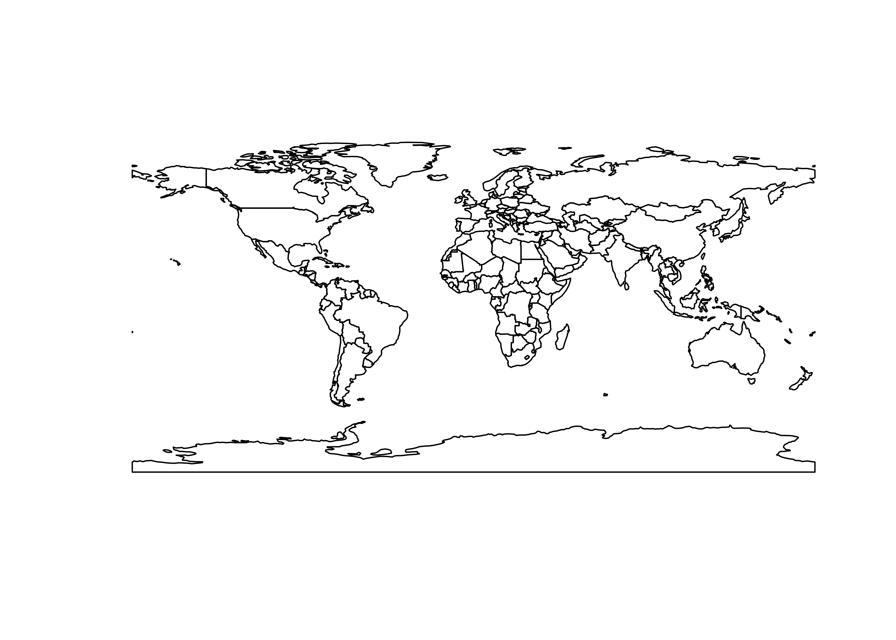
## [1] "sfc_MULTIPOLYGON" "sfc"Here’s a ggplot2() version of the world outline:
# ggplot map of world_outline
ggplot() +
geom_sf(data = world_otl_sf, fill = NA, col = "black") +
scale_x_continuous(breaks = seq(-180, 180, 30)) +
scale_y_continuous(breaks = seq(-90, 90, 30)) +
coord_sf(xlim = c(-180, +180), ylim = c(-90, 90), expand = FALSE) +
theme_bw()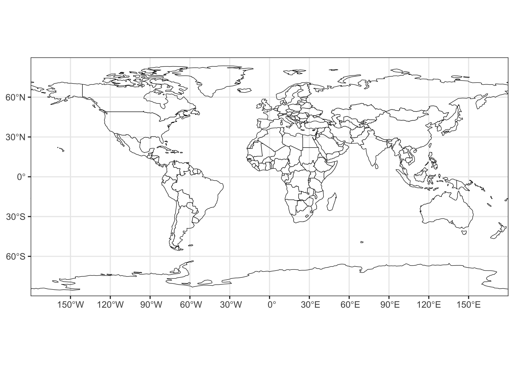
ggplot2 allows fine control of such things as graticule
labeling, color scales, and so on.
2 stars
The stars package, like terra and
sf can easily read and write netCDF files. Here, we’ll look
at a couple of “reanalysis” datasets consisting of 4-dimensional cubes
of retrospective long-term means of climate data generated by
observations and a reanalysis climate model, where the dimensions are
longitude by latitude by level by time (and level refers to
elevation in the atmosphere as represented by pressure, e.g. level 1 is
at1000 hPa (i.e., the surface), level 6 is at 500 hPa (upper air)).
2.1 Read some data
Read the pressure-surface heights:
# stars
nc_file <- "/Users/bartlein/Projects/RESS/data/nc_files/NCEP2_hgt.mon.ltm.1991-2020.nc"
hgt <- read_ncdf(nc_file, var = "hgt", proxy = FALSE)
# list some info
hgt## stars object with 4 dimensions and 1 attribute
## attribute(s), summary of first 1e+05 cells:
## Min. 1st Qu. Median Mean 3rd Qu. Max.
## hgt [m] -133.7667 1339.558 4405.3 5014.268 8540.267 12480.2
## dimension(s):
## from to offset delta refsys values x/y
## lon 1 143 -181.2 2.5 WGS 84 NULL [x]
## lat 1 73 91.25 -2.5 WGS 84 NULL [y]
## level 1 17 NA NA NA [17] 10,...,1000
## time 1 12 NA NA POSIXct 0000-12-30,...,0001-11-29## lon lat level time
## 143 73 17 12The time-dimension values in this data set are in the “time-since”
format, which read_ncdf() interprets in a somewhat awkward
year-month-day format. They can be replaced by text labels:
# replace time dimension values
attr(hgt, "dimensions")$time$values <-
c("Jan", "Feb", "Mar", "Apr", "May", "Jun", "Jul", "Aug", "Sep", "Oct", "Nov", "Dec")
attr(hgt, "dimensions")$time$refsys <- "Name"
hgt## stars object with 4 dimensions and 1 attribute
## attribute(s), summary of first 1e+05 cells:
## Min. 1st Qu. Median Mean 3rd Qu. Max.
## hgt [m] -133.7667 1339.558 4405.3 5014.268 8540.267 12480.2
## dimension(s):
## from to offset delta refsys values x/y
## lon 1 143 -181.2 2.5 WGS 84 NULL [x]
## lat 1 73 91.25 -2.5 WGS 84 NULL [y]
## level 1 17 NA NA NA [17] 10,...,1000
## time 1 12 NA NA Name Jan,...,DecPlot the pressure-surface heights. Ignore the bounding-box warning.
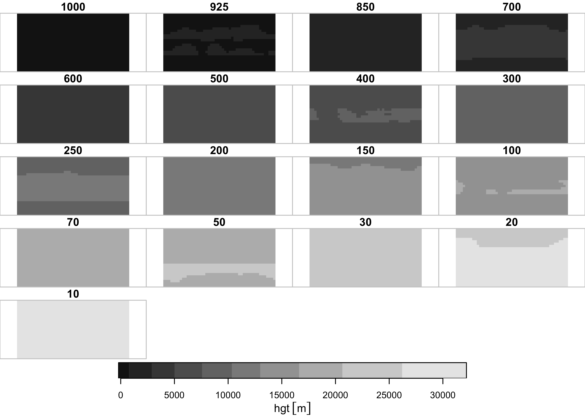
What seems to get plotted is the long-term means of one month at the different levels. Plot a single level, here level 6, or the 500 hPa level.
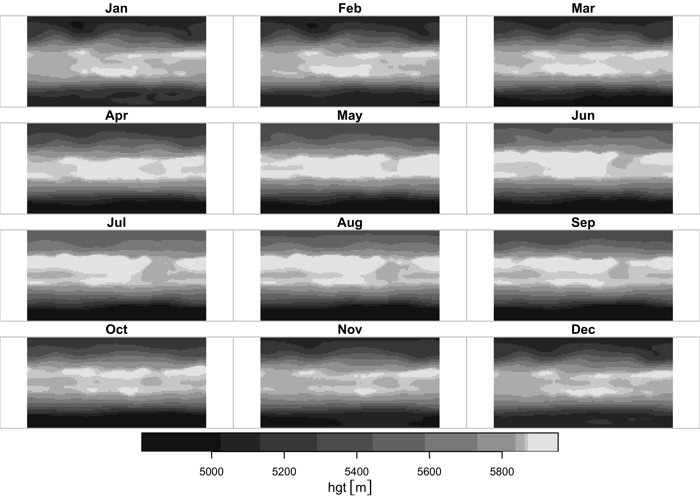
Repeat for air temperature (air in this data set):
nc_file <- "/Users/bartlein/Projects/RESS/data/nc_files/NCEP2_air.mon.ltm.1991-2020.nc"
air <- read_ncdf(nc_file, var = "air", proxy = FALSE)
air## stars object with 4 dimensions and 1 attribute
## attribute(s), summary of first 1e+05 cells:
## Min. 1st Qu. Median Mean 3rd Qu. Max.
## air [K] 209.071 232.305 253.0591 253.473 273.3577 308.6734
## dimension(s):
## from to offset delta refsys values x/y
## lon 1 143 -181.2 2.5 WGS 84 NULL [x]
## lat 1 73 91.25 -2.5 WGS 84 NULL [y]
## level 1 17 NA NA NA [17] 10,...,1000
## time 1 12 NA NA POSIXct 0000-12-30,...,0001-11-29## lon lat level time
## 143 73 17 12# replace time dimension values
attr(air, "dimensions")$time$values <-
c("Jan", "Feb", "Mar", "Apr", "May", "Jun", "Jul", "Aug", "Sep", "Oct", "Nov", "Dec")
attr(air, "dimensions")$time$refsys <- "Name"
air## stars object with 4 dimensions and 1 attribute
## attribute(s), summary of first 1e+05 cells:
## Min. 1st Qu. Median Mean 3rd Qu. Max.
## air [K] 209.071 232.305 253.0591 253.473 273.3577 308.6734
## dimension(s):
## from to offset delta refsys values x/y
## lon 1 143 -181.2 2.5 WGS 84 NULL [x]
## lat 1 73 91.25 -2.5 WGS 84 NULL [y]
## level 1 17 NA NA NA [17] 10,...,1000
## time 1 12 NA NA Name Jan,...,Dec
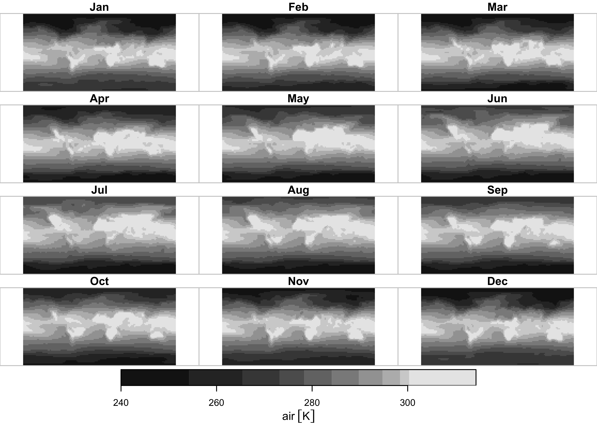
2.2 ggplot2 maps
ggplot2 has a function geom_stars() that
“knows” how to plot stars data objects: Here’s a plot of
500 hPa (level 6) heights:
# stars ggplots
ggplot() +
geom_stars(data = slice(hgt, level, 6)) +
geom_sf(data = world_otl_sf, fill = NA) +
facet_wrap(~ time, nrow = 4, ncol = 3) +
coord_sf(xlim = c(-180, +180), ylim = c(-90, 90), expand = FALSE) +
scale_fill_distiller(palette = "PuOr") +
theme_bw() + theme(strip.text = element_text(size = 6))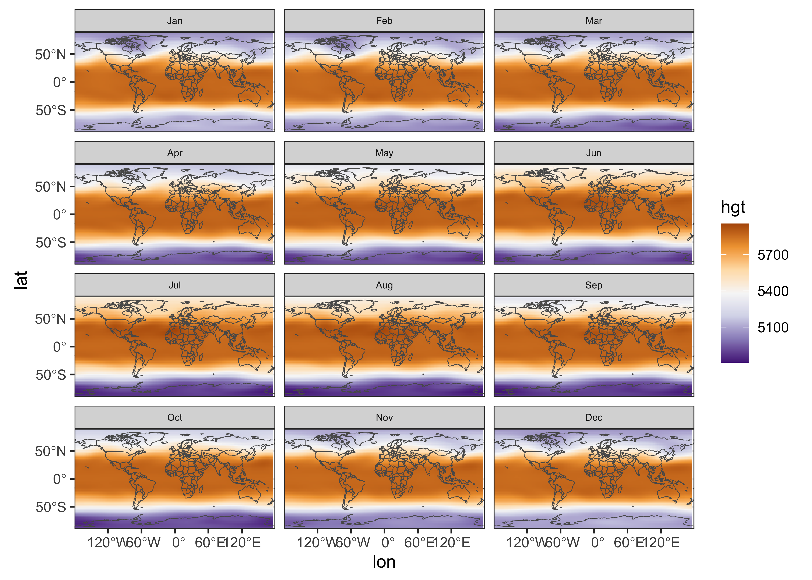
Here, the stars object was plotted first, followed by
the world world outline. The facet_wrap() function controls
the paneling, and the expand = FALSE argument of the
coord_sf() function removes some of the white space between
panels. The theme(strip.text = element_text(size = 6))
function makes the “header” boxes and fonts a little smaller.
Here’s the plot for near-surface air temperature:
ggplot() +
geom_stars(data = slice(air, level, 1)) +
geom_sf(data = world_otl_sf, fill = NA) +
facet_wrap(~ time, nrow = 4, ncol = 3) +
coord_sf(xlim = c(-180, +180), ylim = c(-90, 90), expand = FALSE) +
scale_fill_distiller(palette = "RdBu") +
theme_bw() + theme(strip.text = element_text(size = 6))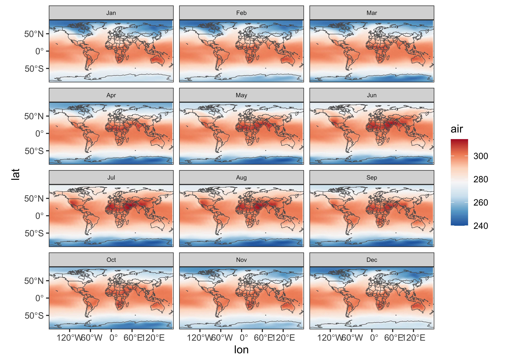
2.3 Converting stars objects to terra and sf objects
stars objects, in particular 3-dimensional data cubes,
can be easily converted to terra and sf
objects (i.e. raster stacks, or SpatRaster objects in
terra and in sf). To demonstrate this, get a
single 3-d “slice” of air temperature from the 4-d cube:
## [1] "stars"## lon lat level time
## 143 73 17 12So air is a 4-d object. Now get the slice (at 1000
hPa):
## [1] "stars"## stars object with 3 dimensions and 1 attribute
## attribute(s):
## Min. 1st Qu. Median Mean 3rd Qu. Max.
## air [K] 239.9924 269.3894 284.1218 281.2621 296.84 314.302
## dimension(s):
## from to offset delta refsys values x/y
## lon 1 143 -181.2 2.5 WGS 84 NULL [x]
## lat 1 73 91.25 -2.5 WGS 84 NULL [y]
## time 1 12 NA NA Name Jan,...,Dec## lon lat time
## 143 73 12Now convert that 3-d slice to terra
## [1] "SpatRaster"
## attr(,"package")
## [1] "terra"## class : SpatRaster
## dimensions : 73, 143, 12 (nrow, ncol, nlyr)
## resolution : 2.5, 2.5 (x, y)
## extent : -181.25, 176.25, -91.25, 91.25 (xmin, xmax, ymin, ymax)
## coord. ref. : lon/lat WGS 84
## source(s) : memory
## names : Jan, Feb, Mar, Apr, May, Jun, ...
## min values : 244.2550, 244.2596, 245.4530, 241.4906, 239.9924, 240.1938, ...
## max values : 308.6734, 307.2127, 307.9087, 309.1877, 311.3960, 313.2636, ...Notice that the spatial extent is a little odd. We know from the original netCDF file that the western edge of the grid is at -180.0E, and the southern edge at -90.0N. The correct spatial exent can be restored like this:
The dataset, which is now a terra object, can be plotted
as usual:
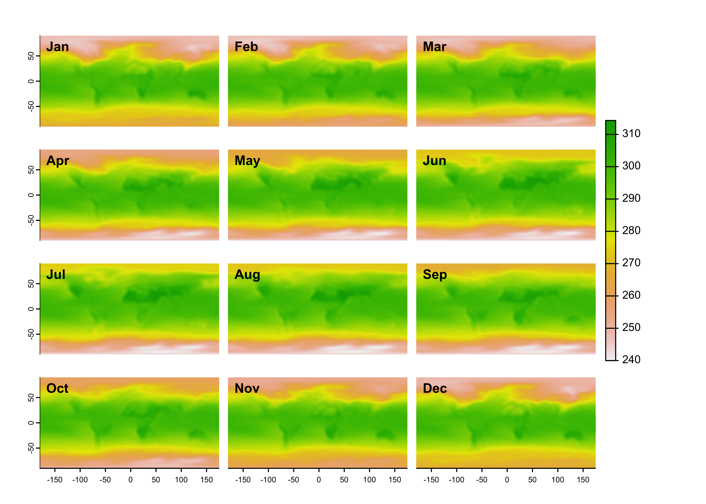
Similarly, the stars object, air_1000, can
be converted to an sf object:
## Simple feature collection with 10439 features and 12 fields
## Geometry type: POINT
## Dimension: XY
## Bounding box: xmin: -180 ymin: -90 xmax: 175 ymax: 90
## Geodetic CRS: WGS 84
## First 10 features:
## Jan Feb Mar Apr May Jun Jul Aug
## 1 248.043 [K] 247.7463 [K] 248.732 [K] 255.4446 [K] 265.0327 [K] 272.6674 [K] 274.6298 [K] 272.8947 [K]
## 2 248.043 [K] 247.7463 [K] 248.732 [K] 255.4446 [K] 265.0327 [K] 272.6674 [K] 274.6298 [K] 272.8947 [K]
## 3 248.043 [K] 247.7463 [K] 248.732 [K] 255.4446 [K] 265.0327 [K] 272.6674 [K] 274.6298 [K] 272.8947 [K]
## 4 248.043 [K] 247.7463 [K] 248.732 [K] 255.4446 [K] 265.0327 [K] 272.6674 [K] 274.6298 [K] 272.8947 [K]
## 5 248.043 [K] 247.7463 [K] 248.732 [K] 255.4446 [K] 265.0327 [K] 272.6674 [K] 274.6298 [K] 272.8947 [K]
## 6 248.043 [K] 247.7463 [K] 248.732 [K] 255.4446 [K] 265.0327 [K] 272.6674 [K] 274.6298 [K] 272.8947 [K]
## 7 248.043 [K] 247.7463 [K] 248.732 [K] 255.4446 [K] 265.0327 [K] 272.6674 [K] 274.6298 [K] 272.8947 [K]
## 8 248.043 [K] 247.7463 [K] 248.732 [K] 255.4446 [K] 265.0327 [K] 272.6674 [K] 274.6298 [K] 272.8947 [K]
## 9 248.043 [K] 247.7463 [K] 248.732 [K] 255.4446 [K] 265.0327 [K] 272.6674 [K] 274.6298 [K] 272.8947 [K]
## 10 248.043 [K] 247.7463 [K] 248.732 [K] 255.4446 [K] 265.0327 [K] 272.6674 [K] 274.6298 [K] 272.8947 [K]
## Sep Oct Nov Dec geometry
## 1 267.3551 [K] 259.2516 [K] 252.7007 [K] 249.3092 [K] POINT (-180 90)
## 2 267.3551 [K] 259.2516 [K] 252.7007 [K] 249.3092 [K] POINT (-177.5 90)
## 3 267.3551 [K] 259.2516 [K] 252.7007 [K] 249.3092 [K] POINT (-175 90)
## 4 267.3551 [K] 259.2516 [K] 252.7007 [K] 249.3092 [K] POINT (-172.5 90)
## 5 267.3551 [K] 259.2516 [K] 252.7007 [K] 249.3092 [K] POINT (-170 90)
## 6 267.3551 [K] 259.2516 [K] 252.7007 [K] 249.3092 [K] POINT (-167.5 90)
## 7 267.3551 [K] 259.2516 [K] 252.7007 [K] 249.3092 [K] POINT (-165 90)
## 8 267.3551 [K] 259.2516 [K] 252.7007 [K] 249.3092 [K] POINT (-162.5 90)
## 9 267.3551 [K] 259.2516 [K] 252.7007 [K] 249.3092 [K] POINT (-160 90)
## 10 267.3551 [K] 259.2516 [K] 252.7007 [K] 249.3092 [K] POINT (-157.5 90)## [1] "sf" "data.frame"The argument as_points = TRUE indicates that we would
like to convert to an sf POINT geometry type.
Setting as_points = FALSE will yield, in this case, an
sf geometry type of POLYGON, which would be
less efficent for storing the data.
3 sf
Plot the sf object just created, first as a set of
panels, one for each month, then as a single map for January:
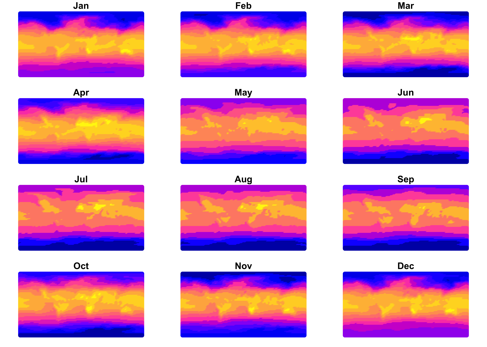

The January map clearly shows that the data consist of individual points.
3.1 ggplot2 maps
To produce ggplot2 maps of the air1000_sf object, there
are several strategies. One is to first convert the raster brick here to
a data.frame, which could subsequently analyzed. Extract the coordinates
and data, in this case for January, from the air1000_sf
object:
# make a data.frame
lon <- st_coordinates(air_1000_sf)[,1]
lat <- st_coordinates(air_1000_sf)[,2]
air <- as.vector((air_1000_sf[,1]$Jan))
air_1000_df <- data.frame(lon, lat, air)
dim(air_1000_df)## [1] 10439 3A little more set-up. Create a set of axis labels:
# axis labels (breaks)
breaks_x <- c(seq(-180, 180, by = 60))
breaks_y <- c(seq(-90, 90, by = 30))
labels_x <- as.character(breaks_x)
labels_y <- as.character(breaks_y) Make a graticule.
## Simple feature collection with 10 features and 10 fields
## Geometry type: LINESTRING
## Dimension: XY
## Bounding box: xmin: -179.82 ymin: -89.91 xmax: 175 ymax: 89.91
## Geodetic CRS: WGS 84
## degree type degree_label geometry x_start y_start x_end y_end angle_start
## 2 -120 E "120"*degree*W LINESTRING (-120 -89.91, -1... -120.00 -89.91 -120 89.91 90
## 3 -60 E " 60"*degree*W LINESTRING (-60 -89.91, -60... -60.00 -89.91 -60 89.91 90
## 4 0 E " 0"*degree LINESTRING (0 -89.91, 0 -88... 0.00 -89.91 0 89.91 90
## 5 60 E " 60"*degree*E LINESTRING (60 -89.91, 60 -... 60.00 -89.91 60 89.91 90
## 6 120 E "120"*degree*E LINESTRING (120 -89.91, 120... 120.00 -89.91 120 89.91 90
## 8 -60 N "60"*degree*S LINESTRING (-179.82 -60, -1... -179.82 -60.00 175 -60.00 0
## 9 -30 N "30"*degree*S LINESTRING (-179.82 -30, -1... -179.82 -30.00 175 -30.00 0
## 10 0 N " 0"*degree LINESTRING (-179.82 0, -176... -179.82 0.00 175 0.00 0
## 11 30 N "30"*degree*N LINESTRING (-179.82 30, -17... -179.82 30.00 175 30.00 0
## 12 60 N "60"*degree*N LINESTRING (-179.82 60, -17... -179.82 60.00 175 60.00 0
## angle_end plot12
## 2 90 TRUE
## 3 90 TRUE
## 4 90 TRUE
## 5 90 TRUE
## 6 90 TRUE
## 8 0 TRUE
## 9 0 TRUE
## 10 0 TRUE
## 11 0 TRUE
## 12 0 TRUENow a ggplot2 map:
# ggplot2 map of air
ggplot() +
geom_tile(data = air_1000_df[,,1], aes(x = lon, y = lat, fill = air)) +
scale_fill_gradient2(low = "darkblue", mid="white", high = "darkred", midpoint = 273.15) +
geom_sf(data = world_otl_sf, col = "black", fill = NA) +
geom_sf(data = grat_otl, col = "gray80", lwd = 0.5, lty = 3) +
coord_sf(xlim = c(-180, +175.0), ylim = c(-90, 90), expand = FALSE) +
scale_x_continuous(breaks = breaks_x) +
scale_y_continuous(breaks = breaks_y) +
labs(x = "Longitude", y = "Latitude", title="NCEP2 Reanalysis 2m Air Temperature", fill="K") +
theme_bw()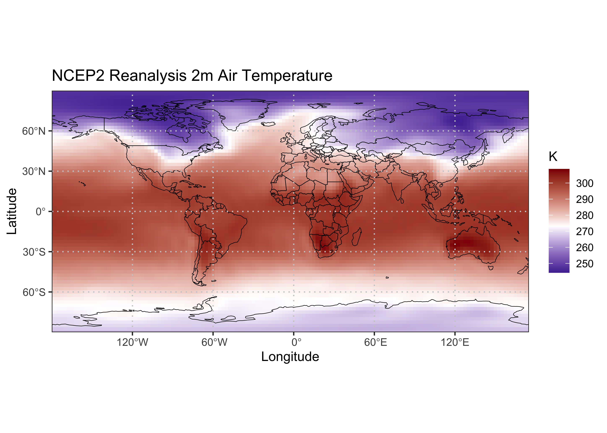
The geom_tile() function is an alternative to
geom_point(), which fills in the spaces between points
(plotting the data a tiles as opposed to round symbols). The two
geom_sf() functions plot the world outline and graticule,
and the coord_sf() function sets the ranges of the
axes.
To make a multipanel map, create a second, long, data.frame, stacking
the individual blocks of data for each month, and adding a month-name
column. Begin by coverting the air_1000_sr
SpatRaster object to a plain array:
## class : SpatRaster
## dimensions : 73, 143, 12 (nrow, ncol, nlyr)
## resolution : 2.482517, 2.465753 (x, y)
## extent : -180, 175, -90, 90 (xmin, xmax, ymin, ymax)
## coord. ref. : lon/lat WGS 84
## source(s) : memory
## names : Jan, Feb, Mar, Apr, May, Jun, ...
## min values : 244.2550, 244.2596, 245.4530, 241.4906, 239.9924, 240.1938, ...
## max values : 308.6734, 307.2127, 307.9087, 309.1877, 311.3960, 313.2636, ...## [1] 73 143 12## [1] "array"## [1] 73 143 12# unwrap the array to a long vector, stacking the months
air_1000_vector <- as.vector(air_array)
class(air_1000_vector)## [1] "numeric"## [1] 125268## [1] 248.0430 247.4417 247.3460 247.8183 248.3500 248.9583## [1] 269.5500 269.0778 269.3746 269.1017 267.7076 266.3626Get the total lenght of one month’s worth of data in the stacked vector:
## [1] 10439Generate a new set of lons and lats for stacked vector:
# generate a "long" vector of lons and lats
lon2 <- seq(-180.0, 175.0, by = 2.5)
lat2 <- seq( 90.0, -90.0, by = -2.5) # reverse the order
length(lon2); length(lat2)## [1] 143## [1] 73## [1] 10439 2Generate the month-names
# month names
month <- c(rep("Jan", nt), rep("Feb", nt), rep("Mar", nt), rep("Apr", nt), rep("May", nt), rep("Jun", nt),
rep("Jul", nt), rep("Aug", nt), rep("Sep", nt), rep("Oct", nt), rep("Nov", nt), rep("Dec", nt))
length(month)## [1] 125268## [1] "Jan" "Jan" "Jan" "Jan" "Jan" "Jan"## [1] "Dec" "Dec" "Dec" "Dec" "Dec" "Dec"Make the data.frame. Note that the length of month is
shorter than the lengths of the other columns, but it is replicated when
building the data.frame:
# make the second data.frame
air_1000_df2 <- data.frame(lonlat[,2], lonlat[,1], air_1000_vector, month)
head(air_1000_df2)## lonlat...2. lonlat...1. air_1000_vector month
## 1 -180 90.0 248.0430 Jan
## 2 -180 87.5 247.4417 Jan
## 3 -180 85.0 247.3460 Jan
## 4 -180 82.5 247.8183 Jan
## 5 -180 80.0 248.3500 Jan
## 6 -180 77.5 248.9583 Jan## lonlat...2. lonlat...1. air_1000_vector month
## 125263 175 -77.5 269.5500 Dec
## 125264 175 -80.0 269.0778 Dec
## 125265 175 -82.5 269.3746 Dec
## 125266 175 -85.0 269.1017 Dec
## 125267 175 -87.5 267.7076 Dec
## 125268 175 -90.0 266.3626 Dec## [1] 125268 4Make the map:
# ggplot2 map of air
ggplot() +
geom_tile(data = air_1000_df2, aes(x = lon, y = lat, fill = air)) +
geom_sf(data = world_otl_sf, col = "black", fill = NA) +
geom_sf(data = grat_otl, col = "gray80", lwd = 0.5, lty = 3) +
coord_sf(xlim = c(-180, +175), ylim = c(-90, 90), expand = FALSE) +
facet_wrap(~factor(month, levels =
c("Jan", "Feb", "Mar", "Apr", "May", "Jun", "Jul", "Aug", "Sep", "Oct", "Nov", "Dec")), nrow = 4, ncol = 3) +
scale_fill_gradient2(low = "darkblue", mid="white", high = "darkred", midpoint = 273.15) +
# scale_y_continuous(breaks = seq(-90, 90, 90), expand = c(0,0)) + # removes whitespace within panels
# scale_x_continuous(breaks = seq(-180, 180, 90), expand = c(0,0)) +
scale_x_continuous(breaks = breaks_x) +
scale_y_continuous(breaks = breaks_y) +
labs(title="NCEP2 Reanalysis 2m Air Temperature", fill="K") +
theme_bw() + theme(strip.text = element_text(size = 5))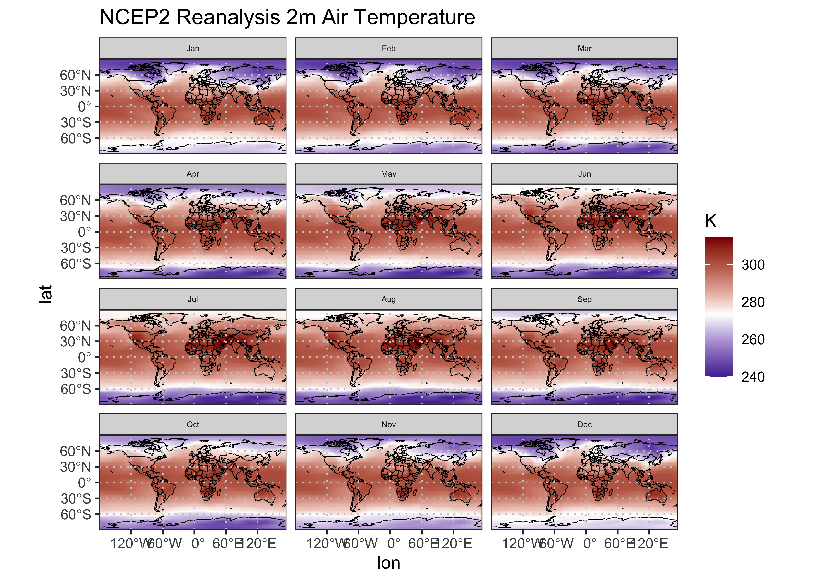
4 sftime
The sftime package is an extension of st to
accomodate a time variable. Unlike stars the time are not
expected to be regular, which can accomodate such data as earthquakes,
fires, trajectories, etc. Here’s an example using a data set of paleo
charcoal from the western U.S., used in Marlon et al. (2012) Long-term
perspective on wildfires in the western USA. Proceedings of the
National Academy of Sciences 109:E535-E543. [https://doi.org/10.1073/pnas.1112839109].
The data consist of z-scores of transformed charcoal-influx values
(CHAR) for the past 3000 years, which record fire activity.
Read the data:
csv_path <- "/Users/bartlein/Dropbox/DataVis/working/data/csv_files/"
csv_file <- "wus_lat_trans.csv"
wus_char_csv <- read.csv((paste(csv_path, csv_file, sep = "")))
class(wus_char_csv)## [1] "data.frame"## seqnum sitenum age ztinflux lat lon
## 1 1 39 -8.3 0.1150 33.65833 -117.8583
## 2 1 39 21.1 -0.2459 33.65833 -117.8583
## 3 1 39 41.2 2.5340 33.65833 -117.8583
## 4 1 39 50.7 1.8109 33.65833 -117.8583
## 5 1 39 68.8 1.8991 33.65833 -117.8583
## 6 1 39 88.0 1.0188 33.65833 -117.8583Convert to a sftime object:
wus_char_sftime <- st_as_sftime(wus_char_csv, time_column_name = "age", coords = c("lon", "lat"),
remove = FALSE, time_column_last = FALSE)
class(wus_char_sftime)## [1] "sftime" "sf" "data.frame"## Spatiotemporal feature collection with 9999 features and 5 fields
## Geometry type: POINT
## Dimension: XY
## Bounding box: xmin: -124.8444 ymin: 33.65833 xmax: -105.5 ymax: 48.67222
## CRS: NA
## Time column with classes: ''.
## Ranging from -74.6 to 3199.42.
## First 10 features:
## seqnum sitenum age ztinflux lat lon geometry
## 1 1 39 -8.3 0.1150 33.65833 -117.8583 POINT (-117.8583 33.65833)
## 2 1 39 21.1 -0.2459 33.65833 -117.8583 POINT (-117.8583 33.65833)
## 3 1 39 41.2 2.5340 33.65833 -117.8583 POINT (-117.8583 33.65833)
## 4 1 39 50.7 1.8109 33.65833 -117.8583 POINT (-117.8583 33.65833)
## 5 1 39 68.8 1.8991 33.65833 -117.8583 POINT (-117.8583 33.65833)
## 6 1 39 88.0 1.0188 33.65833 -117.8583 POINT (-117.8583 33.65833)
## 7 1 39 102.8 3.2354 33.65833 -117.8583 POINT (-117.8583 33.65833)
## 8 1 39 123.6 3.1590 33.65833 -117.8583 POINT (-117.8583 33.65833)
## 9 1 39 153.7 1.6399 33.65833 -117.8583 POINT (-117.8583 33.65833)
## 10 1 39 188.6 0.4108 33.65833 -117.8583 POINT (-117.8583 33.65833)Note that data.frame is now an sf “POINT” object with
explicit geometry (as well as a “time column”). Here’s a simple latitude
by age plot ( Hovmöller diagram):
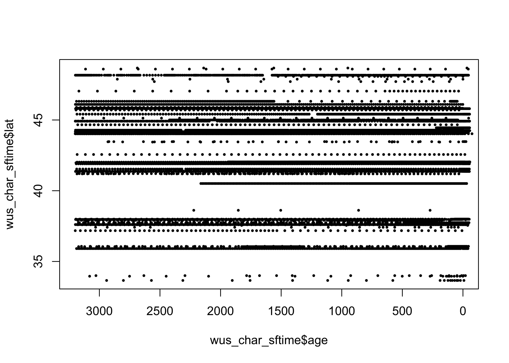
Plot the locations of the sites.
# ggplot2 map of wus_char_sftime
ggplot() +
geom_sf(data = na2_sf, fill=NA) +
geom_sf(data = wus_sf, fill=NA) +
geom_point(aes(x = wus_char_sftime$lon, y = wus_char_sftime$lat), color = "red") +
coord_sf(xlim = c(-130, -100), ylim = c(30, 50), expand = FALSE) +
labs(title="Western U.S. High-Resolution Charcoal Records", x = "Longitude", y = "Latitude") +
theme_bw() + theme(legend.position="bottom")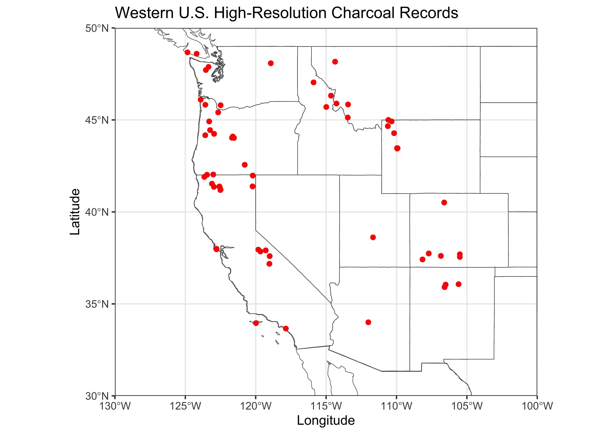
And here’s a better Hovmöller diagram:
# ggplot2 Hovmöller plots -- Year x Latitude
cutpts <- c(-99, -5, -2, -1, -0.5, 0.0, 0.5, 1, 2, 5, 99)
ztinflux_factor <- factor(findInterval(wus_char_sftime$ztinflux, cutpts))
ggplot() +
scale_color_brewer(type = "div", palette = "RdBu", aesthetics = "color", direction = 0,
labels = c("< -5", "-5 to -2", "-2 to -1", "-1 to -0.5", "-0.5 to 0.0",
"0.0 to 0.5", "0.5 to 1", "1 to 2", "2 to 5", "> 5"),
name = "Z-Score") +
geom_point(aes(x = wus_char_sftime$age, y = wus_char_sftime$lat, color = ztinflux_factor), size = 1) +
scale_x_continuous(breaks = seq(3200, -100, -500), trans = "reverse") +
scale_y_continuous(breaks = seq(30, 50, 5)) +
labs(title="Western U.S. High-Resolution Charcoal Records", y = "Latitude", x = "Age", fill="Z-Scores Charcoal Influx") +
guides(color = guide_legend(override.aes = list(size=3))) +
theme_bw() + theme(legend.position="bottom") + theme(aspect.ratio = 2/4)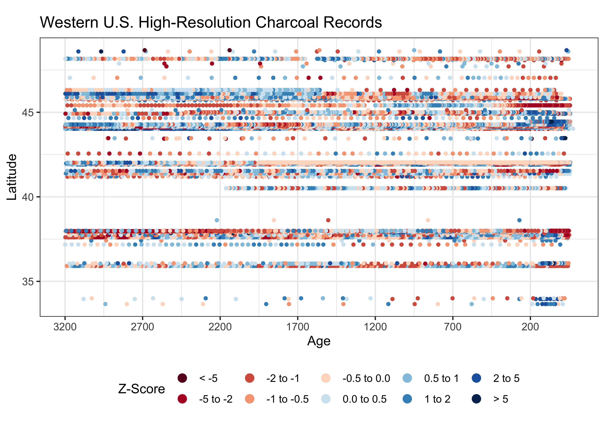